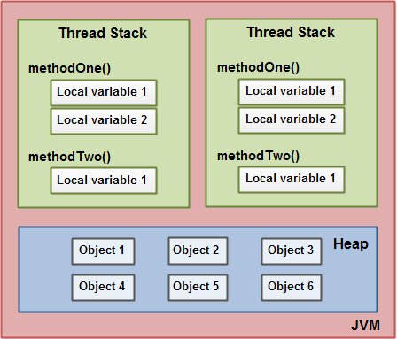

Preface
终于，今天终于有底气来谈论这个经常被各种面试官提及的话题了。
本文将涵盖目前入门 Java 并发 & 并行编程的基本理论知识。
我（面试的时候）几乎场场都面多线程，我都说我不太懂。（感觉面试官在）传达给我一层意思：（学）Java（却）不懂多线程等于我没学 Java。
- 某位不愿意透露姓名的人（不是我）
内存模型
理解 Java 内存模型是学习 Java 多线程的基础中的基础。
Java 内存模型
先从基本的开始：
- 内存被分为两个部分：堆（Stack）内存 和 栈（Heap）内存
Stack 就相当于许多书整齐的摞起来;
Heap 就相当于许多书乱七八糟的散在那里.
每个线程都有自己的 Stack 内存，所有线程共用一个 Heap 内存。
现在加入方法和变量：

- 所有基本数据类型（就是所有小写字母开头的数据类型，包括
boolean,byte,short,char,int,long,float,double），由哪个线程创建的就只能由哪个线程访问。 - 所有对象都存放在 Heap 里，
IntegerByte之类的也算。
现在标出它们之间的关系：
- 如果变量的数据类型是基本数据类型，那它就只存放于当前线程 Stack 内。
- 如果变量指向一个对象，这个变量存放于当前线程 Stack 内，但变量指向的对象存放于 Heap 里。
- 如果某个对象里包含方法，方法里包含一些变量，这些变量会存放于线程 Stack 内，即使这个对象存放在 Heap 里。
- 对象存放在 Heap 里，对象里的成员变量也存放在 Heap 里，不管这个成员变量是个基本数据类型还是一个对象的引用。
- 静态类只有一个实例，这个实例和其他对象一样存放在 Heap 里，静态类里的成员变量也跟着存放在 Heap 里。
- 综合上面几条得出：线程可以访问 Heap 内的任意对象，只要该线程有那个对象的引用，也就是线程内的某个变量指向 Heap 内的某个对象。
硬件内存模型
以前的那些还在用单核 CPU 的计算机，系统必须对线程进行调度，也就意味着 同一时刻只能有一个线程占用 CPU，也就不是真正的并行运算（就像 Python 那样的 “假” 多线程）。现在的计算机基本上都在用多核 CPU（有些时候还能看到主板上有多个 CPU），也就意味着 可以有多个线程同时运行。
CPU 会自带一点儿内存，它们称之为 寄存器（Registers）。CPU 还可以有一层或多层缓存内存（Cache Memory），一般来说 它们的容量都比寄存器大，但速度肯定没有 CPU 直接访问寄存器快。还有一个就是主内存（Main Memory），也就是存放在插在主板上的内存条里的数据。因为距离的原因导致 CPU 访问寄存器的速度 > CPU 访问缓存内存的速度 > CPU 访问主内存的速度。
当 CPU 需要主内存里的数据时候，就读取一部分数据然后存到缓存内存里，然后再从缓存内存里读取读取一部分数据到寄存器里，然后再进行运算。当 CPU 想把寄存器里的运算结果写回主内存里时 就把它先写到缓存内存里，然后由缓存内存决定何时把数据写回内存里。
一般情况下，当 CPU 需要的数据不存在于缓存内存里 并且 缓存内存里没有地方存放要从主内存读入新的数据 时，缓存内存就会把缓存的 CPU 运算结果写回主内存，然后再从主内存读入新的数据供 CPU 使用。
Java 内存模型 与 硬件内存模型
如前面一节所述，缓存内存架在 CPU 寄存器和内存之间。当多个 CPU 同时读取同一个位置的数据 又想同时写回同一个位置的数据时，因为缓存内存将数据写回主内存的时机是不确定的（至少不能人为干预），也就意味着 下一次从主内存读取出的数据也是不确定的，也就是所谓的 “脏读（Dirty read）“。
我觉得举个例子能更进一步的描述这种情况：
- 假设2个线程并行运行同样的代码，它们要做的事是 每次访问一个数字的时候就把那个数字
+1。我们希望的最终结果是 两个线程把数字从0加到2。 - 现在 主内存里有个数字 值为
0 - 线程1从主内存读取数字并存放到寄存器，数字值为
0，此时线程2也从主内存读取数字存放到寄存器，数字值也是0 - 线程1把数字值
+1后值为1并写到 CPU 内存缓存里，线程2也跟着把数字值加到1也把它写到 CPU 内存缓存里了 - 然后其中一颗 CPU 的内存缓存把
1写回主内存 - 然后另一颗 CPU 的内存缓存把
1写回主内存
这种现象就叫做 竞争状况（Race Condition）。
有些地方把 Race Condition 翻译成 竞态条件，我认为这个翻译是错误的。我觉得这里的 Condition 一词不是 条件 的意思，而是 一种状况，两个线程在争抢同一个资源是 一种状况 而不是 一个条件。
Linearizability, Serializability, Atomicity（原子性）
注： 本小节内容可能难记又难懂，如果看不懂没关系，以后在看 Java 的锁的具体应用时候可以时不时的回顾&应用这里的知识。反正我是看懂了。
Linearizability
Once a write completes, all later reads (where “later” is defined by wall-clock start time) should return the value of that write or the value of a later write. Once a read returns a particular value, all later reads should return that value or the value of a later write.
当一个写操作完成后，在其之后的所有读操作都应该读出那个写操作写进去的值，或者也可以是之后的写操作写进去的值。
当一个读操作返回一个特定的值后，在其之后的所有读操作都应该返回那个值，或者也可以是之后的写操作写进去的值。
Serializability
Serializability is the classical concurrency scheme. It ensures that a schedule for executing concurrent transactions is equivalent to one that executes the transactions serially in some order. It assumes that all accesses to the database are done using read and write operations. A schedule is called correct if we can find a serial schedule that is equivalent to it. Given a set of transactions T1…Tn, two schedules S1 and S2 of these transactions are equivalent if the following conditions are satisfied:
Serializability 是一个经典的并发程序的可选特性，这个特性能确保：一个计划任务（Schedule）里并发执行的一些事务（Transactions） 等同于 这些事务以某种顺序逐个执行，假设所有对数据库的操作都是由读和写操作构成的。如果能找到一个（并行执行的）计划任务与一个顺序执行的计划任务 相同 的话，这个计划任务则称之为 correct（我实在是不知道该如何翻译这个 correct）。给定一组事务名为 T1 ... Tn 和两个计划任务 S1 和 S2，满足以下条件则说明这两个计划任务是相同的：
Read-Write Synchronization: If a transaction reads a value written by another transaction in one schedule, then it also does so in the other schedule.
读写同步：在一个计划任务里，如果一个事务会读取由另一个事务写入的值，那这件事也会在另一个计划任务里发生。
Write-Write Synchronization: If a transaction overwrites the value of another transaction in one schedule, it also does so in the other schedule.
写写同步：在一个计划任务里，如果一个事务会覆写由另一个事务写入的值，那这件事也会在另一个计划任务里发生。
These two properties ensure that there can be no difference in the effects of the two schedules. As an example, consider the schedule in Figure 1.
这两个属性能确保执行两个计划任务后产生的结果是相同的，比如 可以参考下面的图：
（原文的图片无法加载，原因：HTTP 404）
It is equivalent to a schedule in which T2 is executed after T1.
（图中）这两个计划任务是等价的，尽管 T2 在 T1 之后执行。
There are several approaches to enforcing serializability.
有那么几种方法可以实施 Serializability。
Atomicity
作为数据库事务的4大特性（ACID）之一的 Atomicity（原子性）这个概念，也是可以应用在并发/并行环境里的。
比如修改一个变量 counter 需要3个步骤：
- 读取变量
counter的值 - 创建新的值
- 把值写入变量
counter
原子（Atom）是化学反应里的最小单位，化学反应时，它要么有反应 要么什么也没发生。原子操作（Atomic Operation）也是同样的概念，上面3个步骤必须都执行或者都不执行，不能只执行其中某几个。
几个并行运行的线程想访问（读取并修改）某个变量，想确保 Atomicity 特性，就必须确保同一时刻只能有一个线程访问该变量，并且独占该变量的访问权，直至该线程完成对该变量的操作。